All Clean Air Health Energy Earth Obs. Methods Interactive
2026
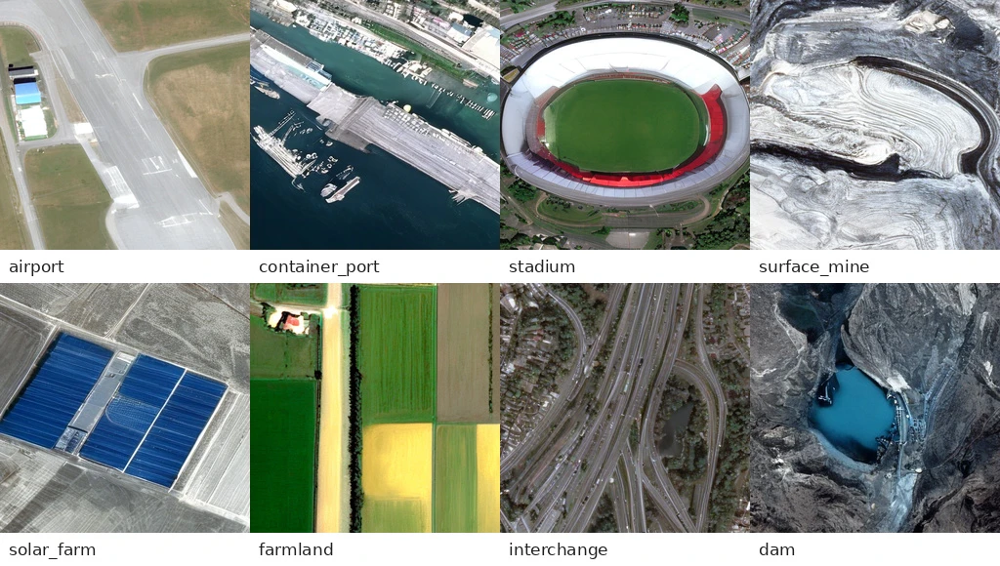
FlowSat: Flow-Matching Diffusion Transformers with Metadata Conditioning for Satellite Image Generation
Digvijay Singh Parihar*, Rishabh Mondal*, Nipun Batra
British Machine Vision Conference (BMVC), 2026
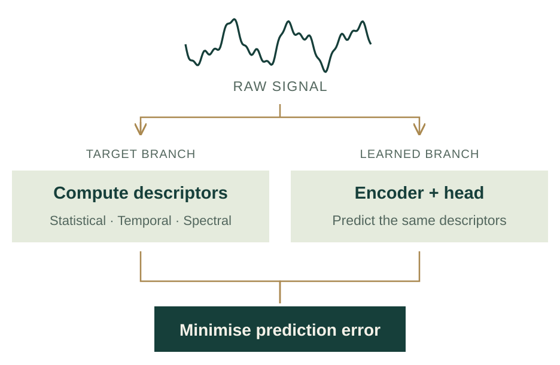
Efficient Time Series SSL via Signal Descriptors
Parv Thacker*, Ayush Shrivastava*, Nipun Batra
IEEE International Conference on Data Science and Advanced Analytics (DSAA), 2026 — Short Presentation
Feature-Informed Self-Supervised Learning for Time Series Understanding
Parv Thacker, Ayush Shrivastava, Nipun Batra
MILETS Workshop @ KDD 2026, The 32nd ACM SIGKDD Conference on Knowledge Discovery and Data Mining (Oral)
ThermEval: A Structured Benchmark for Evaluation of Vision-Language Models on Thermal Imagery
Ayush Shrivastava*, Kirtan Gangani*, Laksh Jain*, Mayank Goel, Nipun Batra
KDD 2026, The 32nd ACM SIGKDD Conference on Knowledge Discovery and Data Mining
NILMBench2026: A Benchmark for Energy DisaggregationBest Paper Runner-Up
Aayush Kuloor*, Anurag Singh*, Harsh Dhru*, Nipun Batra
BuildSys 2026, The 13th ACM International Conference on Systems for Energy-Efficient Buildings, Cities, and Transportation
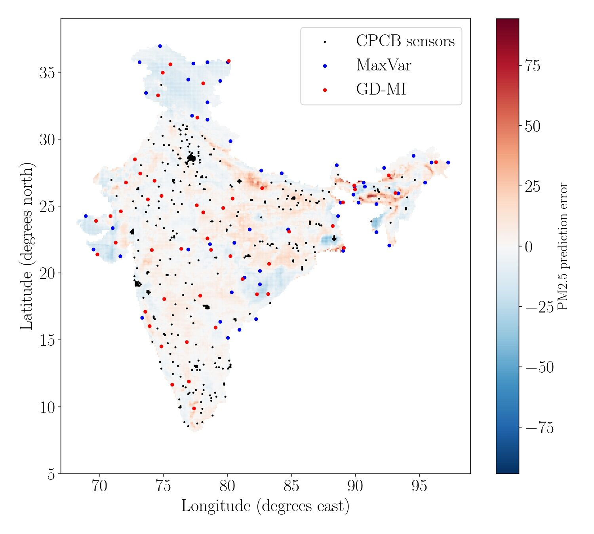
Scalable Air-Quality Sensor Placement via Gradient-Based Mutual Information Maximization
Zeel B Patel, Vinayak Rana, Nipun Batra
AI for Social Impact Track, AAAI 2026, The Fortieth AAAI Conference on Artificial Intelligence
2025
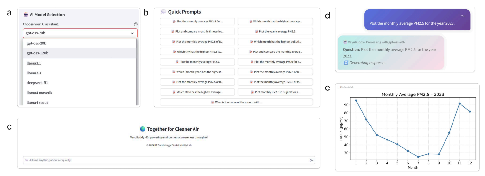
VayuBench and VayuChat: Executable Benchmarking and Deployment of LLMs for Multi-Dataset Air Quality Analytics
Vedant Acharya, Abhay Pisharodi, Ratnesh Pasi, Rishabh Mondal, Nipun Batra
ACM IKDD CODS 2025 - 13th International Conference on Data Science (ADS Track)
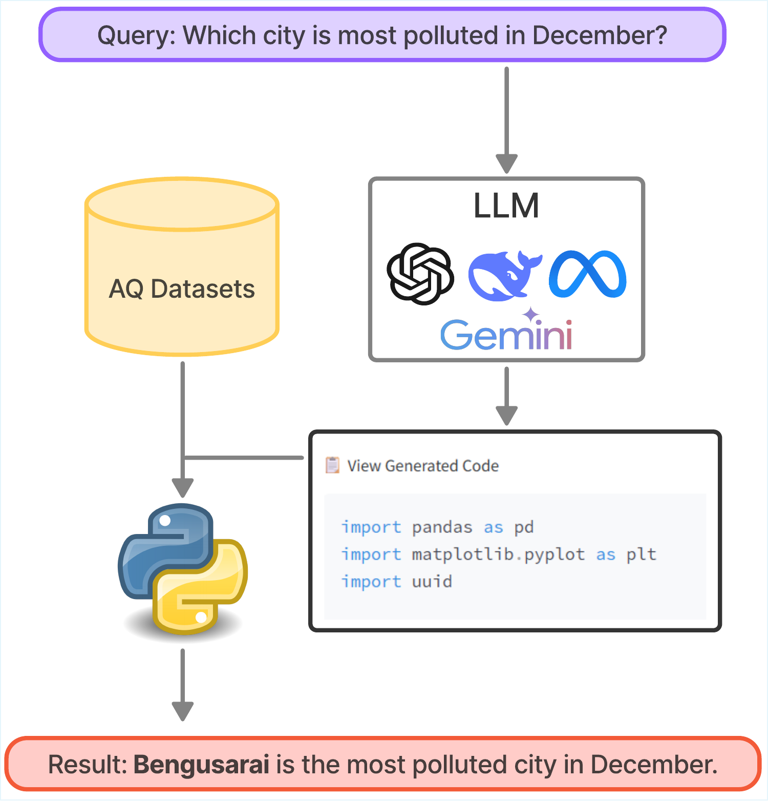
VayuChat: An LLM-Powered Conversational Interface for Air Quality Data Analytics
Vedant Acharya, Abhay Pisharodi, Rishabh Mondal, Nipun Batra
ACM IKDD CODS 2025 - 13th International Conference on Data Science (Demo)
SENTINELKILNDB: A Large-Scale Dataset and Benchmark for OBB Brick Kiln Detection in South Asia Using Satellite Imagery
Rishabh Mondal, Jeet Parab, Heer Kubadia, Shataxi Dubey, Shardul Junagade, Zeel B Patel, Nipun Batra
Datasets and Benchmarks Track, NeurIPS 2025, The Thirty-Ninth Annual Conference on Neural Information Processing Systems
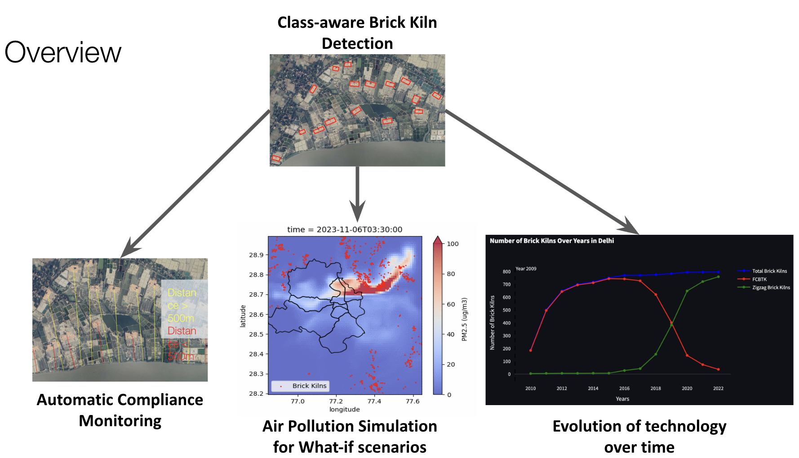
Space to Policy: Scalable Brick Kiln Detection and Automatic Compliance Monitoring with Geospatial Data
Zeel B Patel, Rishabh Mondal, Shataxi Dubey, Suraj Jaiswal, Sarath Guttikunda, Nipun Batra
ACM Journal on Computing and Sustainable Societies (JCSS), Volume 3, Issue 3, 2025
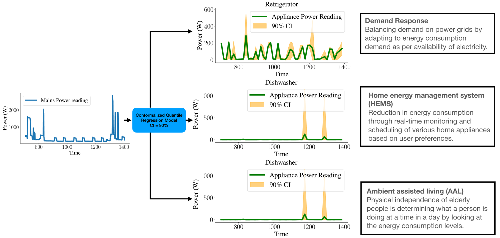
Distribution-Free Uncertainty Quantification and Calibration for Energy Disaggregation
Haikoo Khandor, R Yeeshu Dhurandhar, Dhairya Shah, Nipun Batra
ACM Journal on Computing and Sustainable Societies (JCSS) 2025
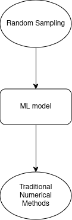
Constraining the 3HDM Parameter Space using Active Learning
Nipun Batra , Baradhwaj Coleppa, Akshat Khanna, Santosh Kumar Rai, Agnivo Sarkar
Physical Review D, 2025
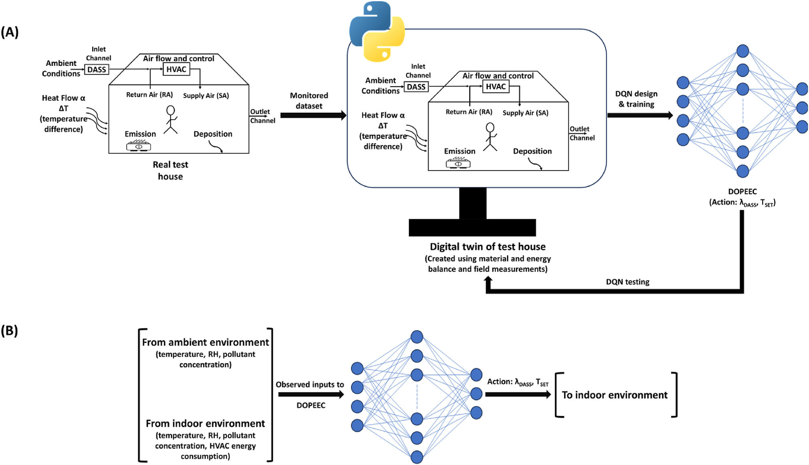
Optimizing Pollutant Exposure, Energy Consumption, and Thermal Comfort in a House via Deep Reinforcement Learning Control
Nishchaya Kumar Mishra, Nipun Batra , Sameer Patel
Journal of Building Engineering, 2025
2024
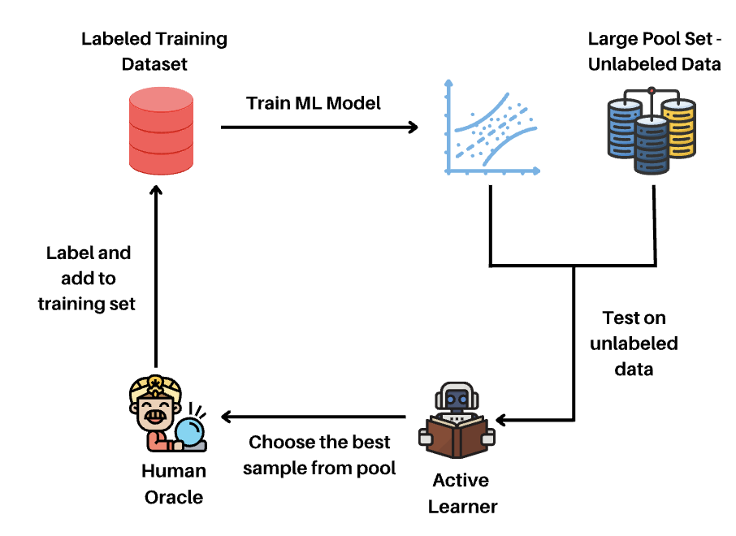
Benchmarking Active Learning for NILM
Dhruv Patel, Ankita Kumari Jain, Haikoo Khandor, Xhitij Choudhary, Nipun Batra
arXiv 2024
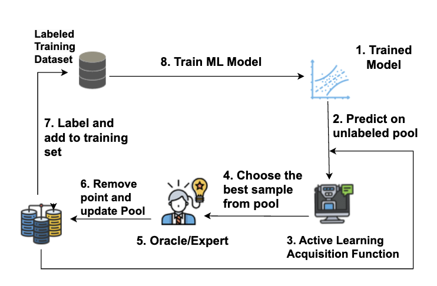
SpiroActive: Active Learning for Efficient Data Acquisition for Spirometry
Ankita Kumari Jain, Nitish Sharma, Madhav Kanda, Nipun Batra
arXiv 2024
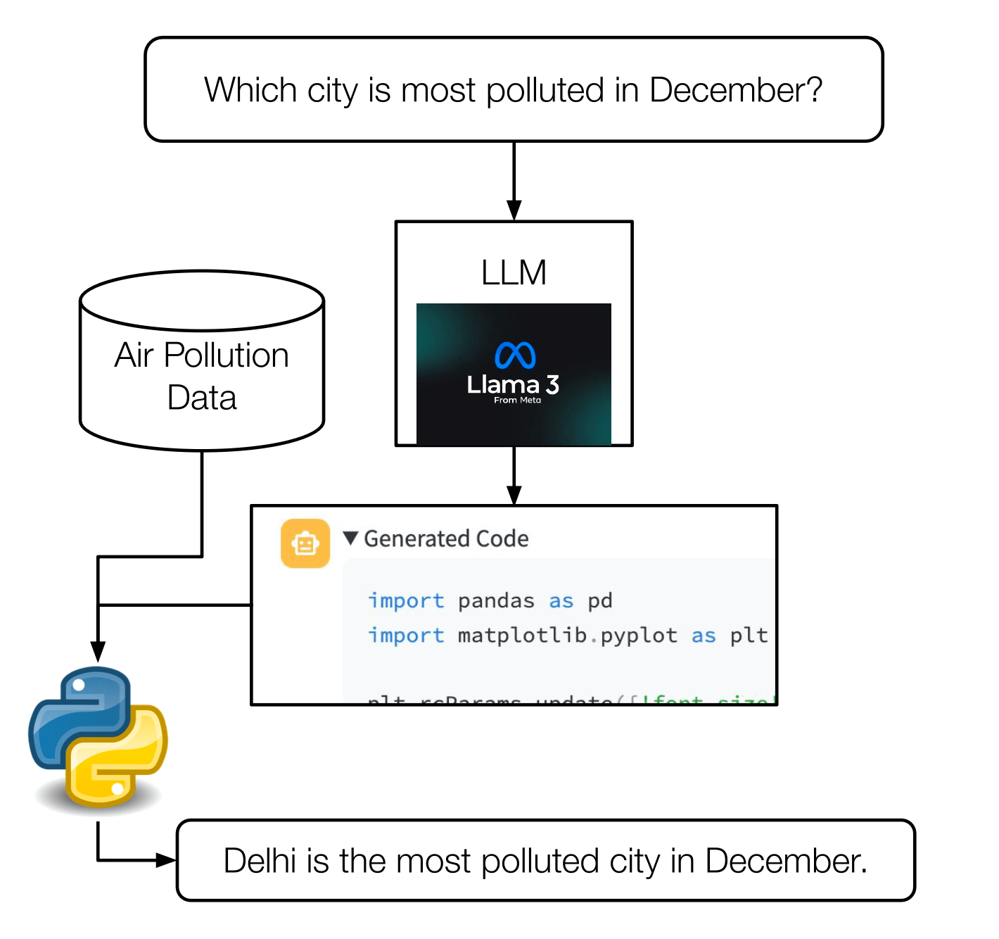
VayuBuddy: an LLM-Powered Chatbot to Democratize Air Quality Insights
Zeel B Patel, Yash Bachwana, Nitish Sharma, Sarath Guttikunda, Nipun Batra
arXiv 2024
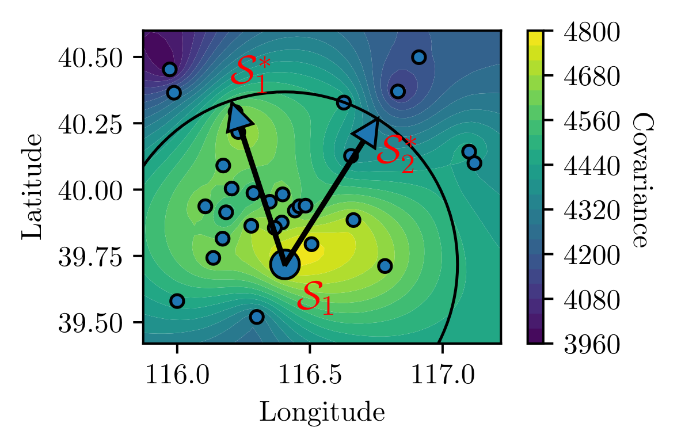
Data from small monitoring networks is unreliable: Case of Indian cities
Sai Krishna Dammalapati, Sarath Guttikunda, Nipun Batra , Zeel B Patel
SIM-air Working Paper Series #48-2024
JoulesEye: Energy Expenditure Estimation and Respiration Sensing from Thermal Imagery While Exercising
Rishiraj Adhikary, Maite Sadeh, Nipun Batra , Mayank Goel
ACM Interactive, Mobile, Wearable and Ubiquitous Technologies (IMWUT) 2024
2023
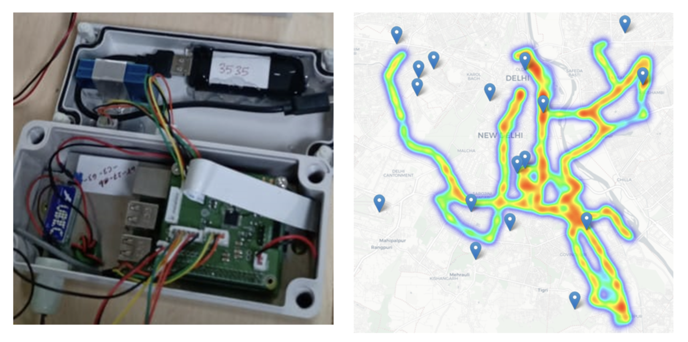
AIRDELHI: Fine-Grained Spatio-Temporal Particulate Matter Dataset From Delhi For ML based Modeling
Sachin Chauhan, Zeel B Patel, Sayan Ranu, Rijurekha Sen, and Nipun Batra .
Datasets and Benchmarks Track, NeurIPS 2023, the Thirty-seventh Annual Conference on Neural Information Processing Systems
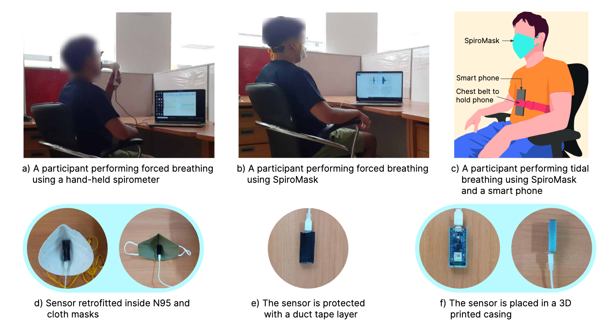
SpiroMask: measuring Lung function using consumer-grade masks
Rishiraj Adhikary, Dhruvi Lodhavia, Chris Francis, Rohit Patil, Tanmay Srivastava, Prerna Khanna, Nipun Batra , Joseph Breda, Jacob Peplinski, Shwetak Patel
ACM Transactions on Computing for Healthcare 2023
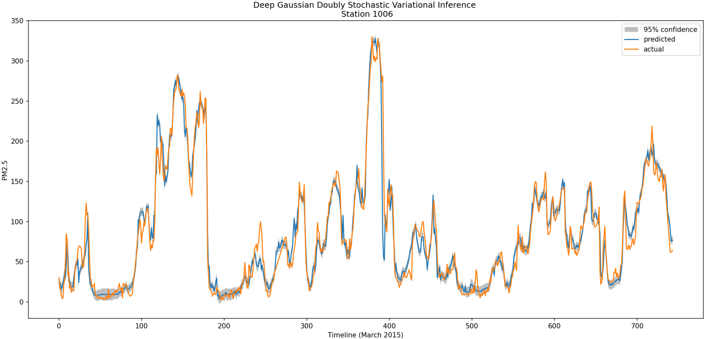
Deep Gaussian Processes for Air Quality Inference
Aadesh Desai, Eshan Gujarathi, Saagar Parikh, Sachin Yadav, Zeel B Patel, Nipun Batra
ACM IKDD CODS-COMAD 2023 - 6th Joint International Conference on Data Science & Management of Data
2022
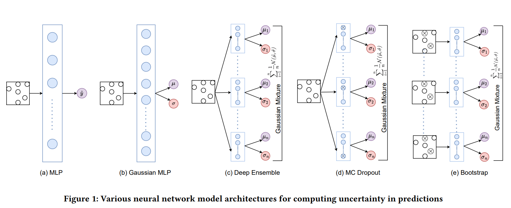
“I do not know”: Quantifying Uncertainty in Neural Network Based Approaches for Non-Intrusive Load Monitoring
Vibhuti Bansal, Rohit Khoiwal, Hetvi Shastri, Haikoo Khandor, Nipun Batra
The 9th ACM International Conference on Systems for Energy-Efficient Built Environments (BuildSys 2022)
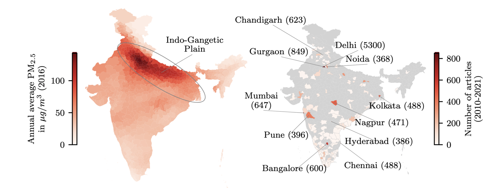
Samachar: Print News Media on Air Pollution in India
Karm Patel, Rishiraj Adhikary, Zeel B Patel, Nipun Batra , Sarath Guttikunda
ACM SIGCAS/SIGCHI Conference on Computing and Sustainable Societies (COMPASS) (COMPASS ’22)
Accurate and Scalable Gaussian Processes for Fine-grained Air Quality Inference
Zeel B Patel, Palak Purohit, Harsh Patel, Shivam Sahni, and Nipun Batra
Thirty-Sixth AAAI Conference on Artificial Intelligence (AAAI-22)
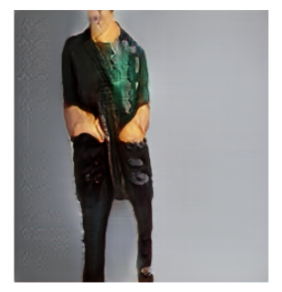
Vastr-GAN: Versatile Apparel Synthesised from Text using a Robust Generative Adversarial Network
Shastri, Hetvi; Lodhavia, Dhruvi; Purohit, Palak; Kaoshik, Ronak; Batra, Nipun
CODS-COMAD ’22 : 5th Joint International Conference on Data Science & Management of Data (9th ACM IKDD CODS and 27th COMAD)
2021
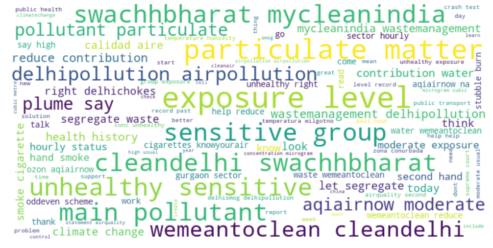
Vartalaap: what drives #airquality discussions: politics, pollution or pseudo-science?
Rishiraj Adhikary, Zeel B. Patel, Tanmay Srivastava, Nipun Batra , Mayank Singh, Udit Bhatia, and Sarath Guttikunda
Proceedings of the ACM on Human-Computer Interaction 5, no. CSCW1 (2021)
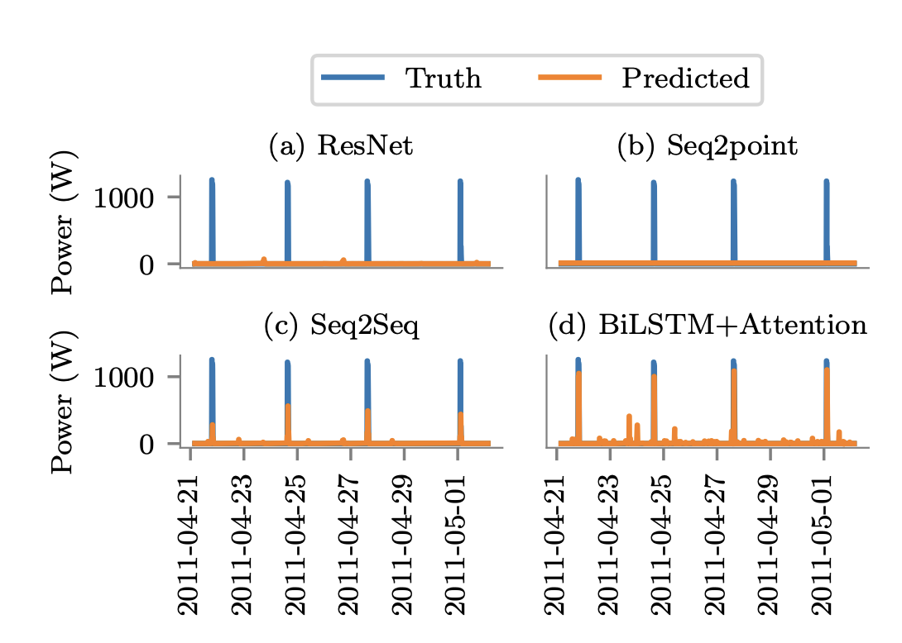
Neural Network Approaches and Dataset Parser for NILM Toolkit
Hetvi Shastri, Nipun Batra
8th ACM International Conference on Systems for Energy-Efficient Buildings, Cities, and Transportation (Buildsys)
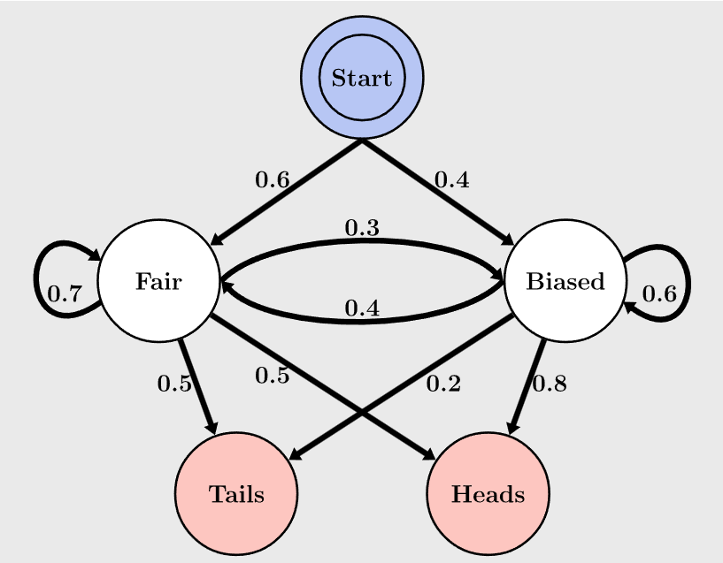
Exploring Hidden Markov Models : An interactive illustration
Kukunuri Rithwik, Rishiraj Adhikary, Mahika Om Jaguste, Nipun Batra and Ashish Tendulkar
4th Workshop on Visualization for AI Explainability (VISxAI’21)
2020
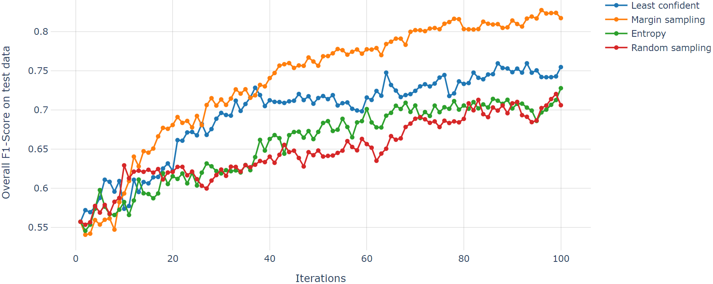
Active Learning: A Visual Tour
Zeel B Patel, Nipun Batra
3rd Workshop on Visualization for AI Explainability (VISxAI’20)
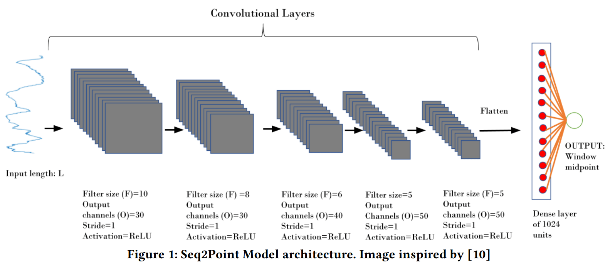
EdgeNILM: towards NILM on edge devices
Kukunuri, Rithwik, Anup Aglawe, Jainish Chauhan, Kratika Bhagtani, Rohan Patil, Sumit Walia, and Nipun Batra
Proceedings of the 7th ACM International Conference on Systems for Energy-Efficient Buildings, Cities, and Transportation, pp. 90-99. 2020.
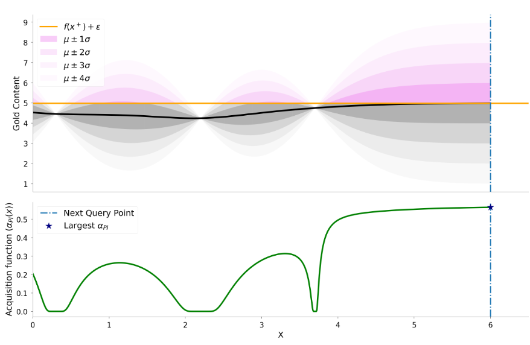
Exploring Bayesian Optimization
Apoorv Agnihotri, Nipun Batra
Distill Journal 2020
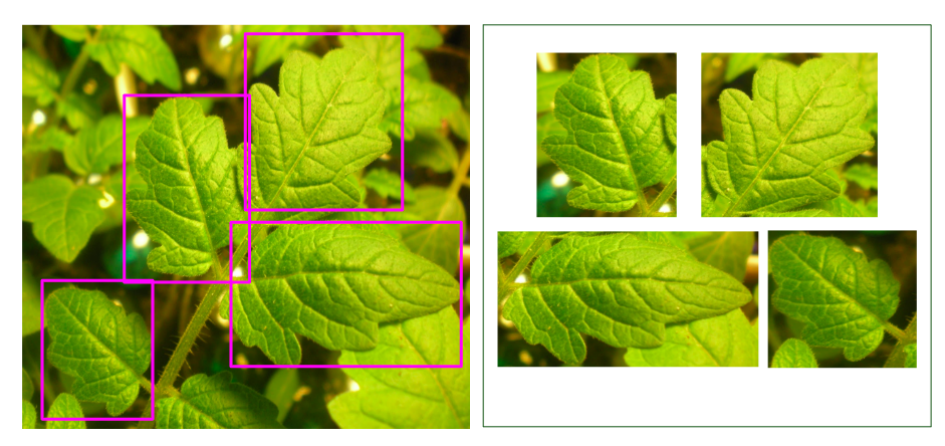
PlantDoc: A Dataset for Visual Plant Disease Detection.
Davinder Singh, Naman Jain, Pranjali Jain, Pratik Kayal, Sudhakar Kumawat, Nipun Batra
ACM India Joint International Conference on Data Science & Management of Data (CODS-COMAD 2020)
2019
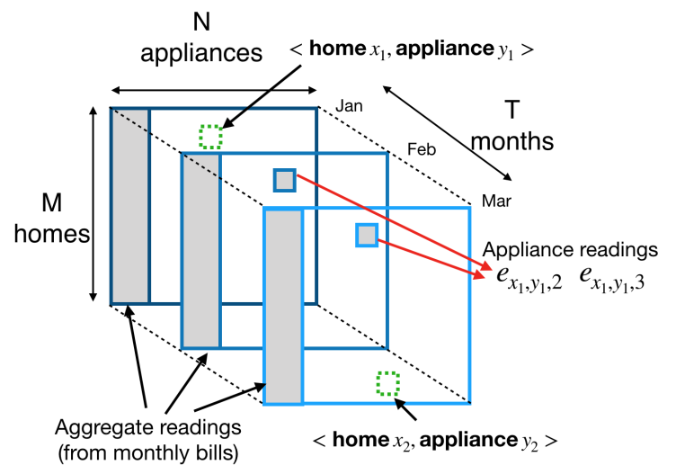
Active Collaborative Sensing for Energy Breakdown
Yiling Jia, Nipun Batra , Hongning Wang, Kamin Whitehouse
The 28th ACM International Conference on Information and Knowledge Management (CIKM’2019)
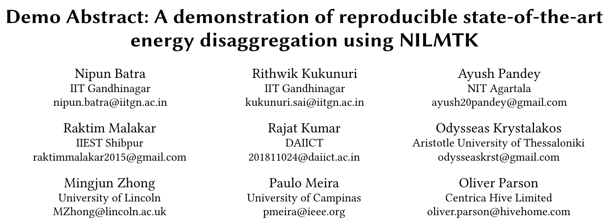
Demo Abstract: A demonstration of reproducible state-of-the-art energy disaggregation using NILMTK
Nipun Batra , Rithwik Kukunuri, Ayush Pandey, Raktim Malakar, Rajat Kumar, Odysseas Krystalakos, Mingjun Zhong, Paulo Meira, Oliver Parson
The 6th ACM International Conference on Systems for Energy-Efficient Buildings, Cities, and Transportation (BuildSys ’19)
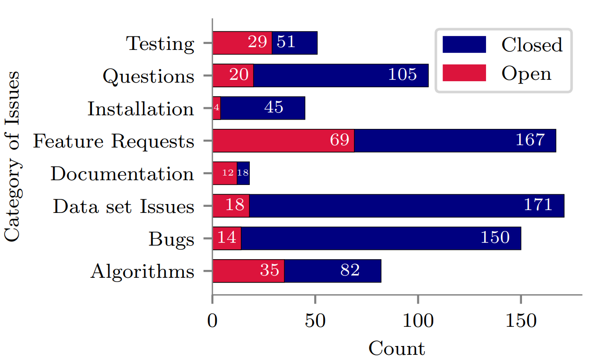
Towards reproducible state-of-the-art energy disaggregation
Nipun Batra , Rithwik Kukunuri, Ayush Pandey, Raktim Malakar, Rajat Kumar, Odysseas Krystalakos, Mingjun Zhong, Paulo Meira, Oliver Parson
The 6th ACM International Conference on Systems for Energy-Efficient Buildings, Cities, and Transportation (BuildSys ’19)
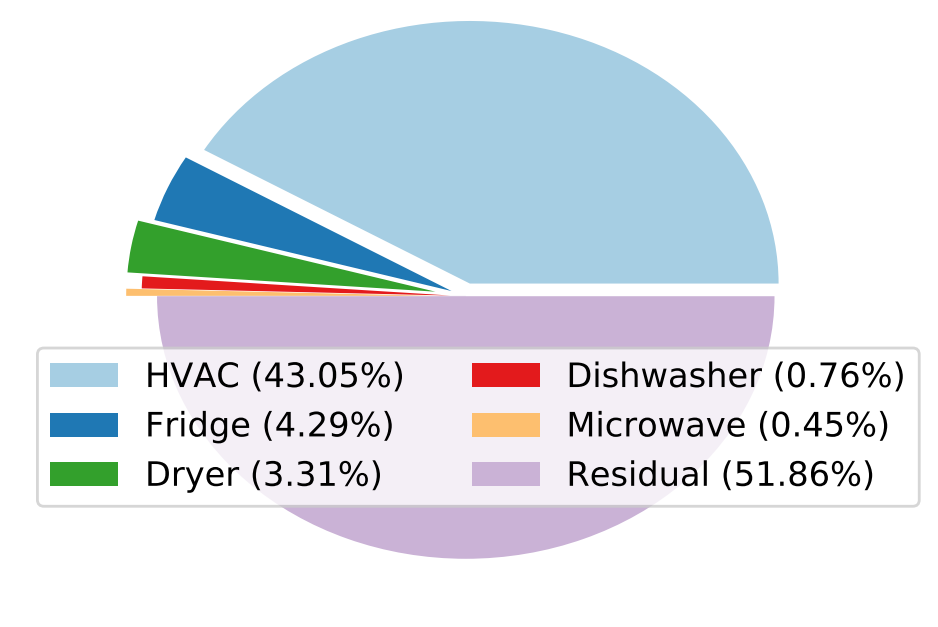
A Tree-Structured Neural Network Model for Household Energy Breakdown
Yiling Jia, Nipun Batra , Hongning Wang, Kamin Whitehouse
Proceedings of the 2019 World Wide Web Conference (WWW ’19)
2018
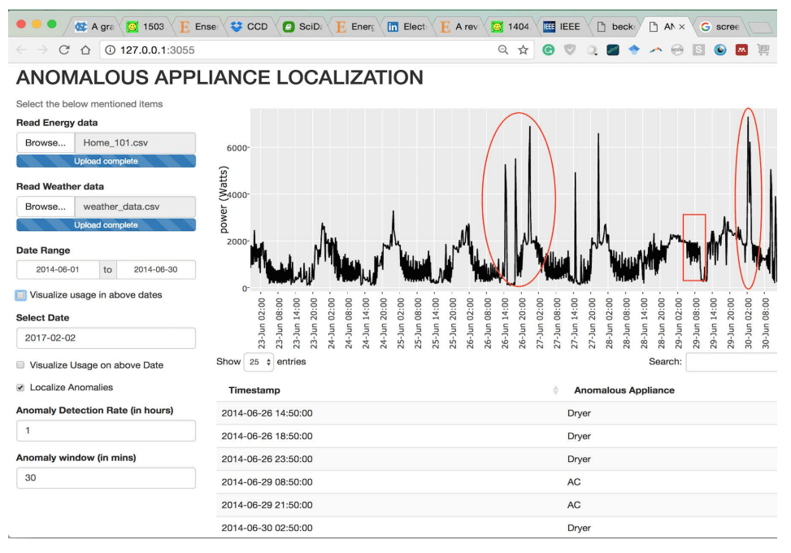
Rimor: Towards Identifying Anomalous Appliances in Buildings
Haroon Rashid, Nipun Batra , Pushpendra Singh
Proceedings of the 5th Conference on Systems for Built Environments (Buildsys 18)
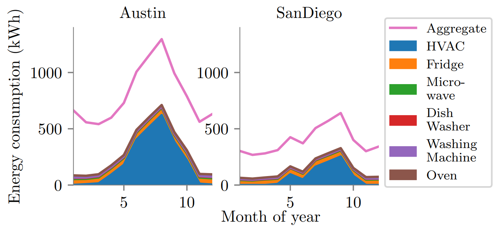
Transferring Decomposed Tensors for Scalable Energy Breakdown across Regions
Nipun Batra , Yiling Jia, Hongning Wang, Kamin Whitehouse
AAAI 2018, Thirty-Second AAAI Conference on Artificial Intelligence (AAAI-18)
2017
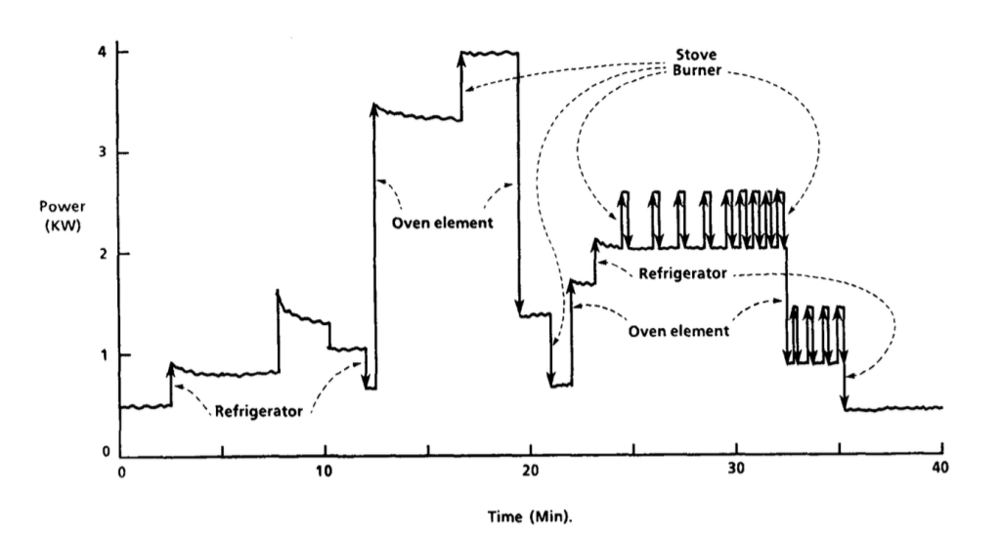
Systems and Analytical Techniques Towards Practical Energy Breakdown for Homes
Nipun Batra
Ph.D. Thesis
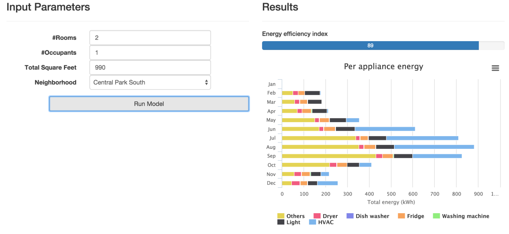
Matrix Factorisation for Scalable Energy Breakdown
Nipun Batra , Hongning Wang, Amarjeet Singh, Kamin Whitehouse
AAAI 2017, Thirty-First AAAI Conference on Artificial Intelligence (AAAI-17)
2016
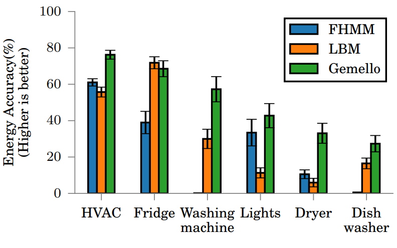
Gemello: Creating a Detailed Energy Breakdown from just the Monthly Electricity Bill
Nipun Batra , Amarjeet Singh, Kamin Whitehouse
KDD 2016, 22nd ACM SIGKDD conference on knowledge discovery and data mining
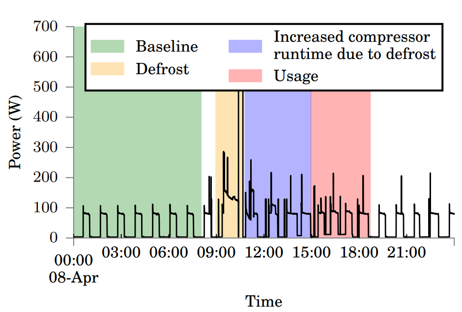
Exploring The Value of Energy Disaggregation Through Actionable Feedback
Nipun Batra , Amarjeet Singh, Kamin Whitehouse
3rd International Workshop on Non-Intrusive Load Monitoring
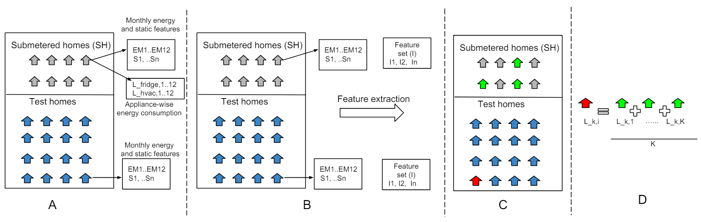
Creating a Detailed Energy Breakdown from just the Monthly Electricity Bill
Nipun Batra , Amarjeet Singh, Kamin Whitehouse
3rd International Workshop on Non-Intrusive Load Monitoring
2015
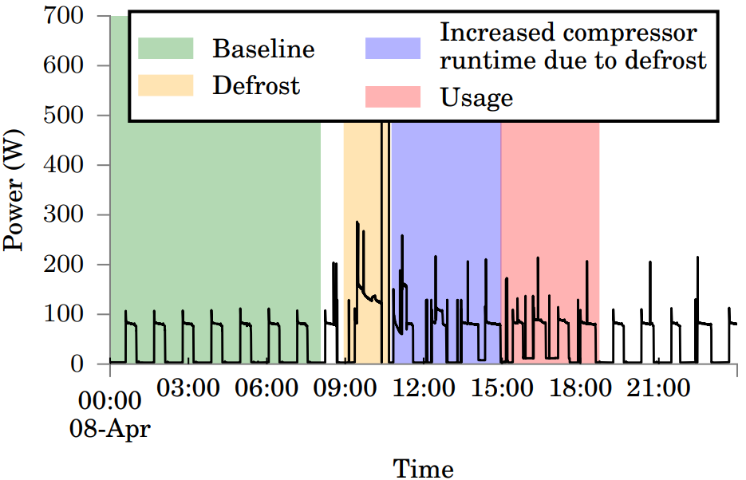
If You Measure It, Can You Improve It? Exploring The Value of Energy Disaggregation
Nipun Batra , Amarjeet Singh, Kamin Whitehouse
2nd ACM International Conference on Embedded Systems For Energy-Efficient Built Environments (Buildsys 2015)
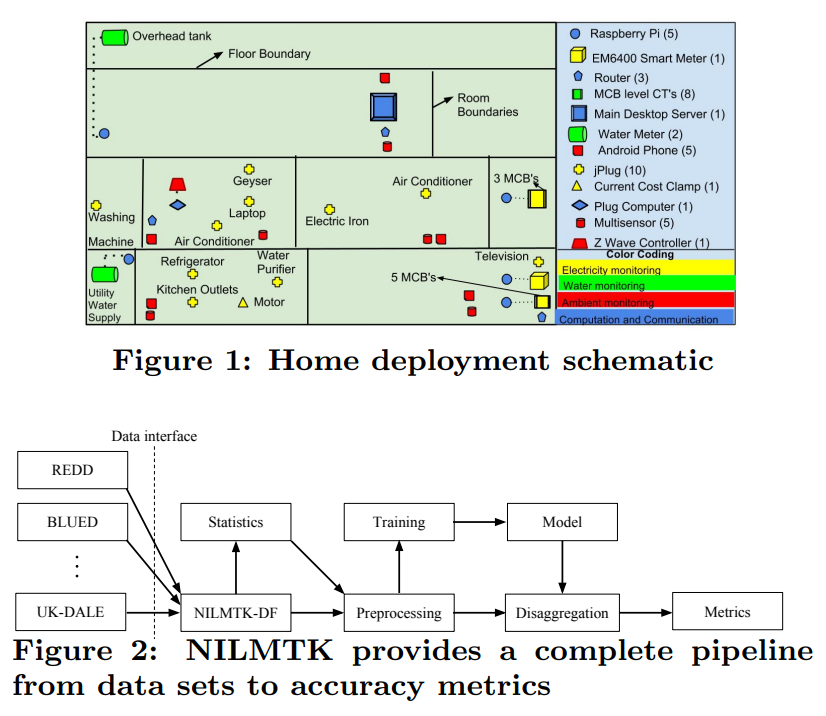
Non Intrusive Load Monitoring: Systems, Metrics and Use Cases
Nipun Batra
Doctoral Colloqium of the 13th ACM Conference on Embedded Networked Sensor Systems (SenSys 2015)
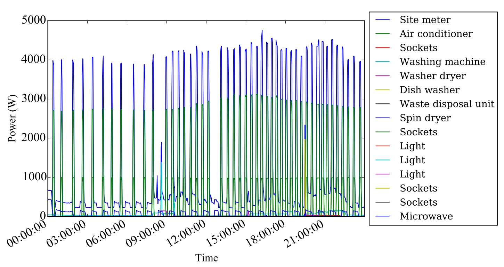
Dataport and NILMTK: A Building Data Set Designed for Non-intrusive Load Monitoring
Oliver Parson, Grant Fisher, April Hersey, Nipun Batra , Jack Kelly, Amarjeet Singh, William Knottenbelt, Alex Rogers.
1st International Symposium on Signal Processing Applications in Smart Buildings at 3rd IEEE Global Conference on Signal and Information Processing, Orlando, FL, USA, 14-16 December, 2015.
2014
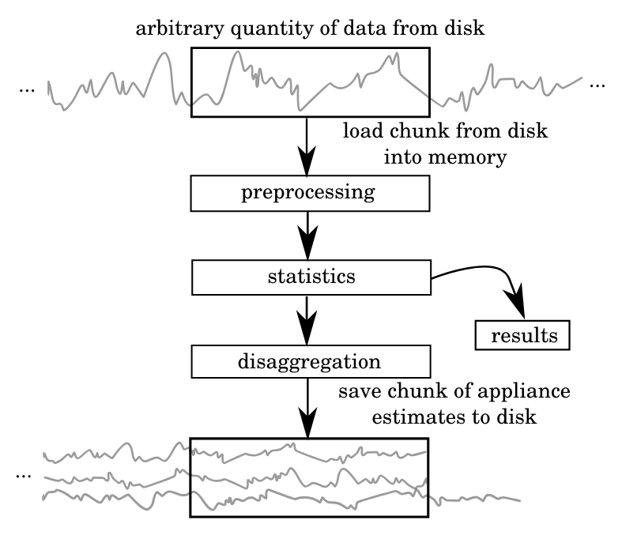
NILMTK v0. 2: A Non-intrusive Load Monitoring Toolkit for Large Scale Data Sets
Jack Kelly, Nipun Batra , Oliver Parson, Haimonti Dutta, William Knottenbelt, Alex Rogers, Amarjeet Singh, Mani Srivastava.
First ACM International Conference on Embedded Systems For Energy-Efficient Built Environments (Buildsys 2014)
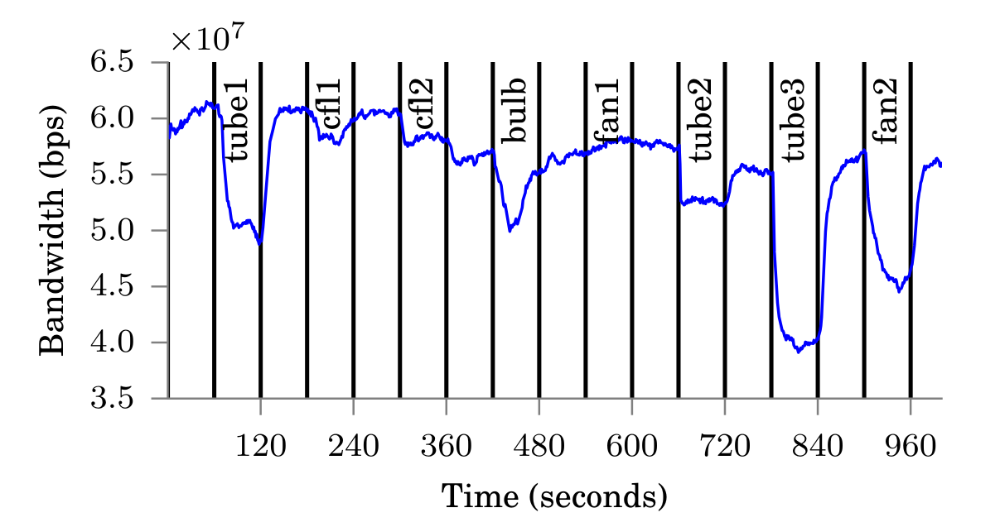
Bits and Watts: Improving energy disaggregation performance using power line communication modems
Nipun Batra , Manoj Gulati, Puneet Jain, Kamin Whitehouse, Amarjeet Singh
First ACM International Conference on Embedded Systems For Energy-Efficient Built Environments (Buildsys 2014)
NILMTK: An Open Source Toolkit for Non-intrusive Load MonitoringTest-of-Time Award 2025
Nipun Batra , Jack Kelly, Oliver Parson, Haimonti Dutta, William Knottenbelt, Alex Rogers, Amarjeet Singh, Mani Srivastava
5th International Conference on Future Energy Systems (ACM e-Energy), Cambridge, UK. 2014
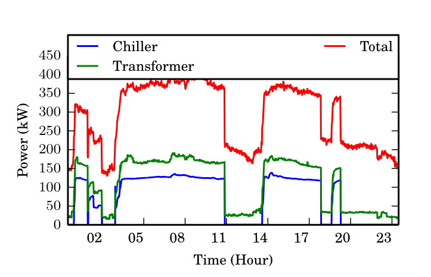
A comparison of non-intrusive load monitoring methods for commercial and residential buildings
Nipun Batra , Oliver Parson, Mario Berges, Amarjeet Singh, Alex Rogers
Tech. report
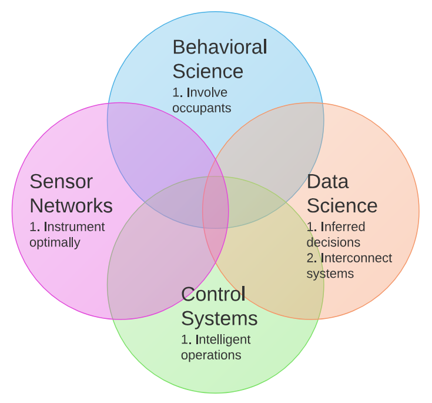
Data Driven Energy Efficiency in Buildings
Nipun Batra , Amarjeet Singh, Pushpendra Singh, Haimonti Dutta, Venkatesh Sarangan, Mani Srivastava
PhD. qualifiers report, IIIT Delhi
2013
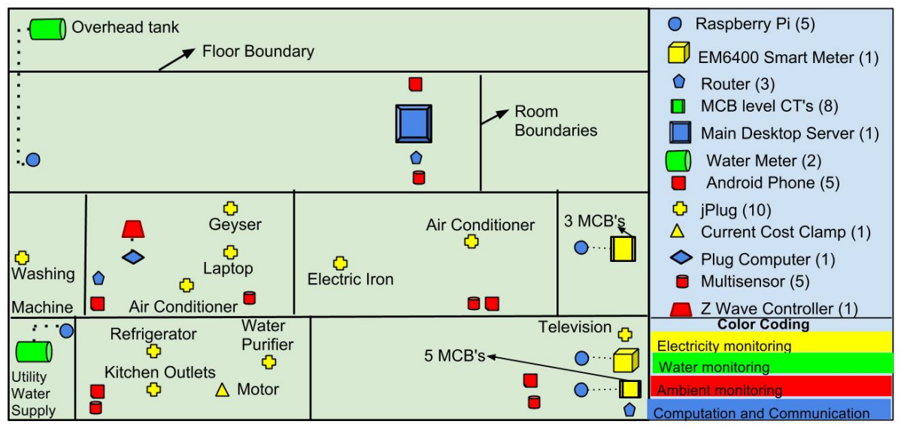
It’s Different: Insights into home energy consumption in India
Nipun Batra , Manoj Gulati, Amarjeet Singh, Mani Srivastava
5th ACM Workshop On Embedded Systems For Energy-Efficient Buildings (Buildsys 2013)
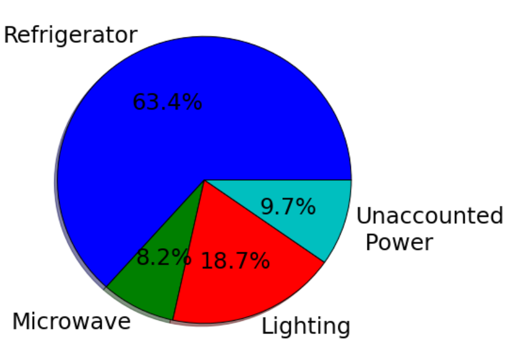
INDiC: Improved Non-Intrusive load monitoring using load Division and Calibration
Nipun Batra , Haimonti Dutta, Amarjeet Singh
The 12th International Conference on Machine Learning and Applications (ICMLA’13)
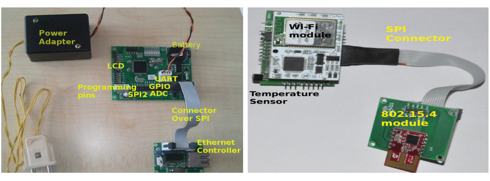
Experiences with Occupancy Based Building Management Systems
Nipun Batra , Pandarasamy Arjunan, Amarjeet Singh, Pushpendra Singh
2013 IEEE Eighth International Conference on Intelligent Sensors, Sensor Networks and Information Processing (ISSNIP ’13)
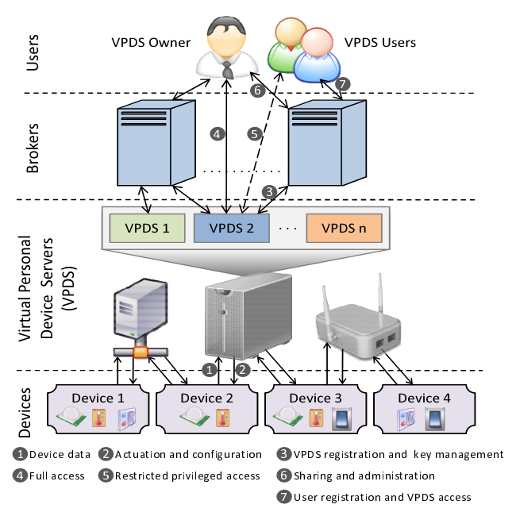
SensorAct: A Privacy and Security Aware Federated Middleware for Building Management
Pandarasamy Arjunan, Nipun Batra , Haksoo Choi, Amarjeet Singh, Pushpendra Singh, Mani Srivastava
BuildSys ’12: Proceedings of the Fourth ACM Workshop on Embedded Sensing Systems for Energy-Efficiency in Buildings
No matching items
Adding a paper? See papers/README.md — one entry in data/publications.yml.